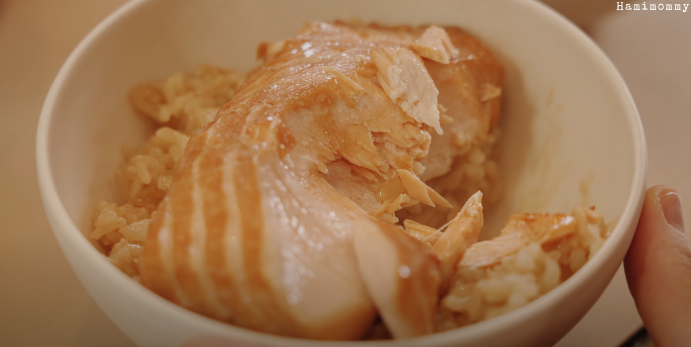

Salmon Pot Rice

Description
The salmon pot rice is a dish that can appease
for a simple lunch or dinner. The salmon is marinated
and lays on top of rice that has steamed with the fillet
after it being cooked. An easy-to-make dish that go
alongside side dishes and soups for a truly, hearty time.
Obtained by Youtube Channel | Hammimommy
Ingredients and Measurements
- salmon 200g salmon
- salmon 0.5 cup of water
- salmon 3 pieces of kelp
- salmon 1T soy sauce
- salmon 1T tsuyu
- salmon 1T mirin
- rice Soaked rice (same amount of water)
- rice 1T tsuyu
- rice 1T soy sauce (
- sauce 1T soy sauce
- sauce 3T chives
- sauce 1T Cheongyang pepper
- sauce 2T tsuyu
- sauce 1T mirim
- sauce 1T sesame seeds oil
Steps to the Procedure
- Begin marinating the salmon in a pan with listed ingredients in the
salmon section
- Cook marinated salmon over medium heat
- After cooking, boil it down with the seasoning from the
marination process
- Cook rice with listed ingredients in the rice section
- Put the salmon into the rice cooker and steam it
for five minutes
- This last step is to make the sauce by scrapping together the listed
ingredients in the sauce section and preparing the dish